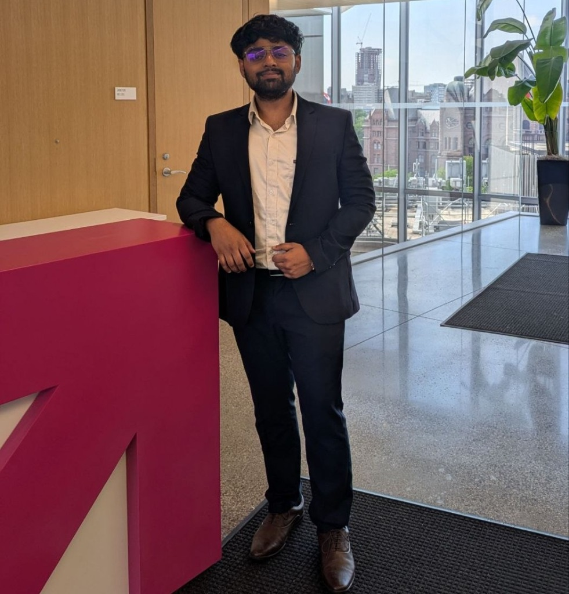

Bridging frontier AI research with enterprise-scale production systems. Applied AI at the Vector Institute, graduate engineering at the University of Toronto, backed by 4 years of enterprise ML systems delivery at Tata Consultancy Services.

Hands-on architectural workbench. Select production queries, tune live hyperparameters with dynamic telemetry recalculation, and click any stage to inspect internal tensor shapes.
[batch, 512, 1536]
Recursive semantic tokenization over 10,000+ enterprise repositories.
Specialized in aligning business objectives with technical feasibility, managing cross-functional stakeholder ecosystems, defining production architectures, and driving adoption across 600,000+ users.
Architected, led, and delivered across enterprise production, academic research, and global developer platforms.
A track record of progressive ownership bridging research, enterprise software, and community enablement.
I am actively engaging with executive search leaders, engineering VPs, and AI practice heads for Solutions Architecture, Applied AI, and Machine Learning leadership opportunities.
Download targeted PDF versions curated for technical leads and hiring committees.
Interactive assistant trained on Tarun's systems architecture philosophy, enterprise deliverables, and research background.